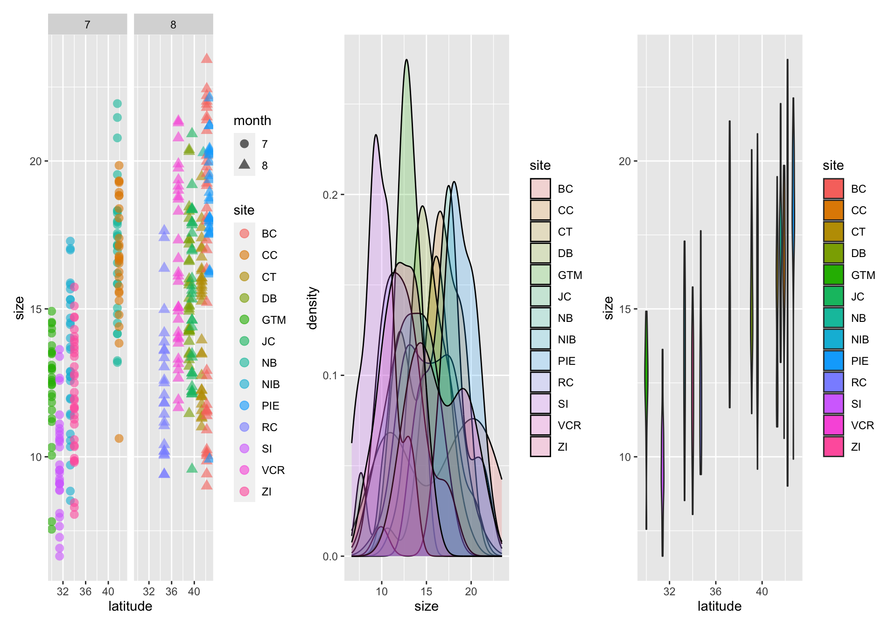
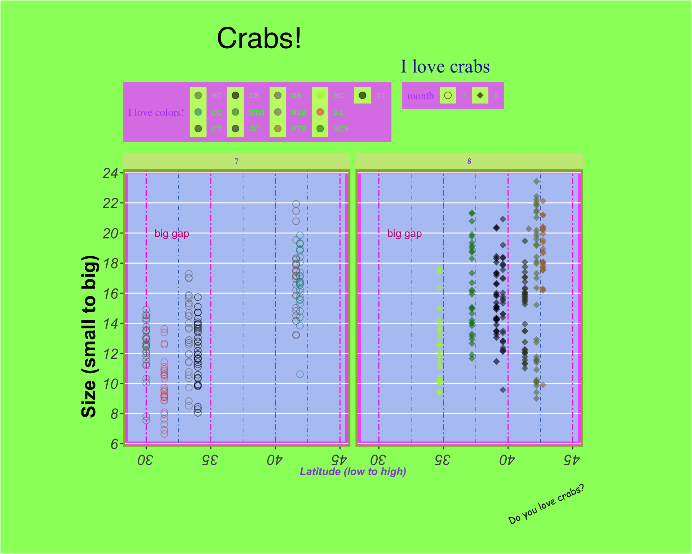
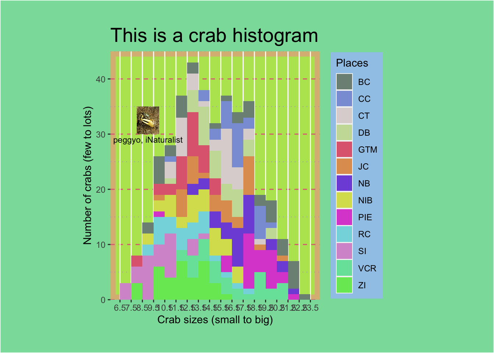
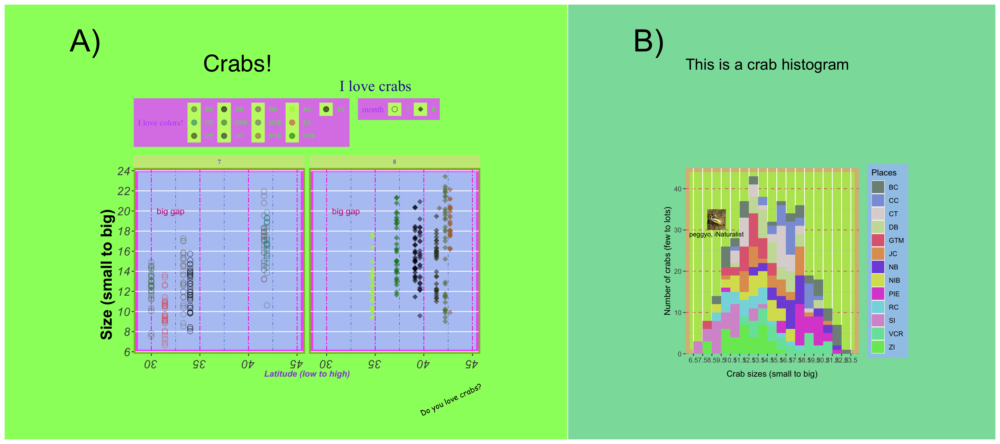

# general use
library(tidyverse) # general tidying and visualization: ggplot is loaded by default with tidyverse
library(lterdatasampler) # data we're using comes from this package
library(lubridate) # working with dates
library(here) # folder organization
# extras
library(patchwork) # arranging plots
library(magick) # putting images into ggplotsData visualization and customization using ggplot
What we’re doing today
In the spirit of Emily Riederer’s ugliest ggplot ever, we’ll play around with ggplot code in order to learn how it works. The goal: make the ugliest plot possible.
0. set up
a. libraries
b. palette
This is to use later.
site_palette <- c("BC" = "#687f47", "CC" = "#268e86", "CT" = "#373f1f",
"DB" = "#03010a", "GTM" = "#447c49", "JC" = "#2e2747",
"NB" = "#7f696a", "NIB" = "#777a76", "PIE" = "#a87445",
"RC" = "#aef23a", "SI" = "#e05357", "VCR" = "#087f0c",
"ZI" = "#010201")1. data adjustment
Today, we’ll use the Plum Island fiddler crab data from lterdatasampler to visualize relationships between latitude and crab size. Read the linked vignette to learn about Bergmann’s rule!
Just to make things a little more interesting, I’m going to split up the dates into years, months, and days and save that as a new data frame, crab_data.
crab_data <- pie_crab %>%
# extracting month from the date column using lubridate::month()
# also making this a factor (instead of numeric) using as.factor()
mutate(month = as.factor(month(date)))2. ggplot grammar and defaults
ggplot works in layers. The code to make a plot can vary, but always includes:
1. the ggplot() call: this tells R that you want to use the function ggplot() in ggplot to plot things.
2. data and aesthetics within that ggplot() call: tells ggplot to use a specific data frame any variables in that data frame that should be represented in the plot (for example, x- and y- axes, colors, shapes)
3. a geom_(): short for “geometry”, geom_() calls tell ggplot what kind of plot you want to make. Try ?geom_ in the console to see the different options.
ggplot() takes aesthetics from the data frame, so I’m going to color the points by site and make the shapes represent month. I’m also going to facet the plot by month using facet_wrap(), which is a useful function when you’re trying to see differences between variables in different panels (or you can use facet_grid(), which does essentially the same thing).
crab_plot1 <- ggplot(data = crab_data, aes(x = latitude, y = size)) +
# putting the aesthetics in here: color points by site, shape points by month
geom_point(aes(color = site, shape = month),
# anything that doesn't have to do with variables (like point size or transparency) goes outside the aesthetics
size = 3, alpha = 0.6) +
# facet by month
facet_wrap(~month)
crab_plot2 <- ggplot(data = crab_data, aes(x = size)) +
geom_density(aes(fill = site), alpha = 0.2)
crab_plot3 <- ggplot(data = crab_data, aes(x = latitude, y = size)) +
geom_violin(aes(fill = site))
crab_plot1 + crab_plot2 + crab_plot3
3. Customization using theme()
Manual selections
You can adjust the colors, shapes, axis limits, etc. using one of the scale_ functions (try ?scale_ to see the many options).
Themes
A lot of customization comes from ggplot themes. Theme elements deal with everything else in the plot that doesn’t have to do with the data (e.g. the plot background, grid, etc.). There are a lot of arguments that you can stack up in theme() (try ?theme()) to see all of them, but they generally fall into a few categories: 1. axes, 2. legends, 3. panels, 4, plots, 5, strips. There are built-in themes in ggplot that can make your plot look pretty good right away, but playing around with theme elements yourself is a great way of getting the exact plot you want.
Additionally, every argument takes a function modifying the elements: 1. lines, 2. rectangles (more broadly, shapes), 3. text. See the help pages for these functions (e.g. ?element_text()) to figure out what you can alter about each element - there’s a lot!
Annotations
Annotations are useful when you want to point something out on a plot. The function is annotate(), which adds an annotation layer onto your plot.
Labels
Lastly, you can adjust any text on labels using the labs() function.
crab_plot <- crab_plot1 +
# scaling
# change point colors and assign each to a site
scale_color_manual(values = site_palette) +
# change the point shapes
scale_shape_manual(values = c("7" = 21, "8" = 18)) +
# change the x and y axis limits and breaks
scale_x_continuous(limits = c(29, 45)) +
scale_y_continuous(n.breaks = 10) +
# theme() call
theme(
# panel: everything having to do with the main plotting area
panel.background = element_rect(fill = '#B5C7F4', color = '#F761F9', linewidth = 5),
panel.border = element_rect(fill = NA, color = "#87Bf18", linewidth = 2),
panel.grid.major.x = element_line(color = "#FF21E1", linetype = 6),
panel.grid.minor.x = element_line(color = "#2D65BF", linetype = 4),
panel.grid.minor.y = element_blank()
) +
# another theme() call: you don't have to split things up like this
# just doing it for ease of demonstration
theme(
# plot: anything having to do with the area around the panel
plot.background = element_rect(fill = "#98FC6A"),
plot.title = element_text(size = 30, hjust = 0.25, family = "Helvetica"),
plot.subtitle = element_text(size = 20, hjust = 0.75, color = "#2A23A3", family = "Times New Roman"),
plot.caption = element_text(size = 10, angle = 25, family = "Comic Sans MS"),
plot.margin = unit(c(1, 4, 1, 3), "cm")
) +
theme(
# axes: anything having to do with the x and y axis
axis.title.x = element_text(face = "bold.italic", color = "#9254D3"),
axis.title.y = element_text(family = "Arial", face = "bold", size = 20, hjust = 0.25),
axis.text = element_text(face = "italic", size = 15),
# note that axis.text options from above are inherited
axis.text.x.bottom = element_text(angle = 180)
) +
theme(
# strips: anything having to do with facet titles
strip.background = element_rect(fill = "#C9E886"),
strip.text = element_text(color = "#854EED", family = "Garamond", face = "bold")
) +
theme(
# legend: anything having to do with legend
legend.background = element_rect(fill = "#DC86E8"),
legend.key = element_rect(fill = "#C2F774"),
legend.direction = "horizontal",
legend.position = "top",
legend.justification = "left",
legend.title = element_text(family = "serif", color = "#B452F9"),
legend.text = element_text(color = "#30F92C", family = "mono")
) +
# making annotation with "big gap"
annotate(geom = "text", x = 32, y = 20, label = "big gap", color = "#CC107D") +
# labs: anything having to do with labels
labs(title = "Crabs!",
subtitle = "I love crabs",
x = "Latitude (low to high)",
y = "Size (small to big)",
caption = "Do you love crabs?",
col = "I love colors!")
crab_plot
4. Adding images to plots
There are many ways of adding images to plots. The package I’ll use is magick. This is a round-about way of getting an image in, but allows you to be flexible with your image types (gifs, etc.). I’ll just save this as an object called crab_image to use later.
# use magick::image_read() to read in the jpeg
crab_image <- image_read(here::here("images", "peggyo-fiddler-crab.jpeg")) %>%
# turn this into a raster
as.raster()5. multipanel plots
There are a couple packages you can use to put plots together like panels in a figure. The big ones are patchwork and cowplot. Try each of them out and see what you like, but we’ll be using patchwork today.
Just to demonstrate how this works, I’m going to make up a histogram of crab sizes. The code is annotated if you’re interested in the customized aesthetics, but they’re not important for this demonstration.
# for a histogram, you don't need y in your aesthetic call
crab_hist <- ggplot(crab_data, aes(x = size)) +
# telling ggplot that you want to plot a histogram
geom_histogram(binwidth = 1, aes(fill = site)) +
# some scaling
scale_x_continuous(breaks = seq(from = 6.5, to = 24.5, by = 1)) +
scale_y_continuous(limits = c(0, 45), expand = c(0, 0)) +
scale_fill_manual(values = c("BC" = "#7D9084", "CC" = "#8B9FD9", "CT" = "#DDD5D5",
"DB" = "#CADDA5", "GTM" = "#DF697F", "JC" = "#E09E5F",
"NB" = "#7F56DB", "NIB" = "#D8DF5D", "PIE" = "#DC53D3",
"RC" = "#84D9DF", "SI" = "#D798D1", "VCR" = "#77E2A8",
"ZI" = "#76E762")) +
# some theme-ing
theme(
panel.background = element_rect(fill = '#B6E45F', color = '#DABA84', linewidth = 5),
panel.grid.minor.x = element_blank(),
panel.grid.major.y = element_line(color = "#E16B86", linetype = 2),
panel.grid.minor.y = element_line(color = "#B49CD2", linetype = 3),
legend.background = element_rect(fill = "#A0C8E8"),
plot.background = element_rect(fill = "#8ADDA8"),
plot.title = element_text(size = 20),
plot.margin = unit(c(1, 4, 1, 3), "cm")
) +
# some labeling
labs(x = "Crab sizes (small to big)",
y = "Number of crabs (few to lots)",
title = "This is a crab histogram",
fill = "Places") +
# adding the crab image
annotation_raster(crab_image, xmin = 8, xmax = 10, ymin = 30, ymax = 35) +
# annotating the plot with the photographer credit
annotate(geom = "text", x = 9, y = 29, label = "peggyo, iNaturalist", size = 3)
crab_hist
patchwork thinks similarly to ggplot in that it takes things in layers with + signs, but also takes &. To be honest, I can’t remember the rules most of the time and I have to look them up.
# this automatically recognizes that you're putting plots together (no function call!)
crab_plots_together <- crab_plot + crab_hist +
# plot_layout: anything having to do with the way plots are arranged
# widths takes a ratio: the panel ratio will be 2:1 left:right
plot_layout(widths = c(2, 1)) +
# plot_annotation: anything having to do with annotations
plot_annotation(tag_levels = "A", tag_suffix = ")") & # annotating them with panel letters
# patchwork has its own theme options!
theme(plot.tag = element_text(size = 40)) # changing the size of the annotations
# display our beautiful plot
crab_plots_together
6. Independent work time
For independent work time, you have a few different options:
a. deconstruct Tidy Tuesday visualizations
Goal: understand how theme options work and/or explore package add-ons to ggplot
Task: recreate Tidy Tuesday visualizations from week 8 (data on Bob Ross paintings). Treat this like a puzzle: you know the end result (the image), but all the pieces you have are in disarray (the theme tools). Try working backwards from the output to see if you can recreate the plot.
Option 1: Treemap

Need some help? Here’s the code.
Option 2: Proportional stacked

Need some help? Here’s the code.
Option 3: Proportional symbol

Need some help? Here’s the code.
Option 4: Ordered horizontal bar

Need some help? Here’s the code.
Option 5: Donut

Need some help? Here’s the code.
b. edit visualizations
Goal: improve visualizations from 1 Mar submissions to convey a message (not just showing the data)
Task: revisit the visualizations you submitted and consider two points:
1) What message am I trying to convey with this figure?
2) How can I convey that message?
Sometimes addressing 1) and 2) together mean taking things away (because your figure is too data-dense) or adding things in (because your figure is a map without data on it).
After you’ve answered 1) and 2) for yourself, write them down and sketch out the plot you would make to address both points. Remake your figure and ask someone to tell you what the main message is (without you telling them what you think it is). It’s important that this person is not in your group and doesn’t know the details of your group project.
Visual vocabulary
You have already learned about different types of plots for different types of data: this is the Visual Vocabulary. You can also use this flow chart or directory of data visualizations. Additionally, you have learned about visual variables (see lecture slides from 26 Jan).
Mapping activity
If you’re stuck, you can also revisit the mapping activity we did in class during week 4. With your group mates, you wrote down the kinds of visualizations you wanted to make and the visual variables you would manipulate in each visualization.
c. revise evaluation plan and digital mock ups
Goal: incorporate feedback into a revised evaluation plan
Task: meet with your group members and carefully consider feedback you have received. As with any feedback: if you agree, incorporate it into your plan; if you disagree, add justification (in text or otherwise) for why you do not need to incorporate that feedback and context for why that feedback doesn’t apply to you.